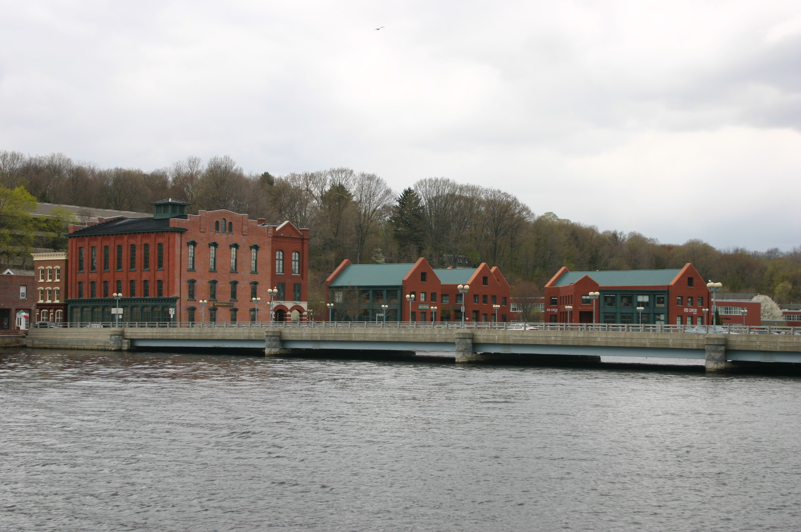
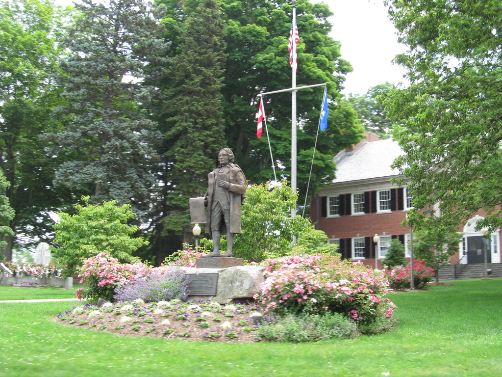
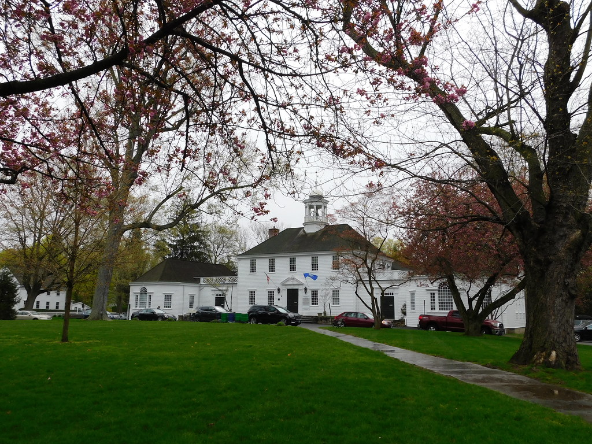
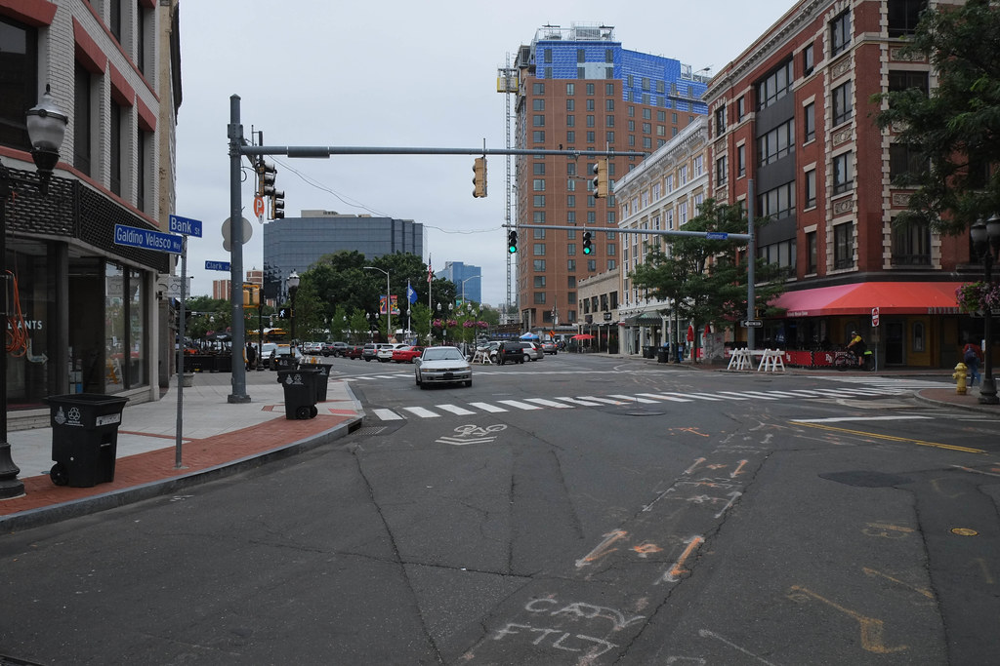

Westport is a town in Fairfield County, Connecticut, United States, along the Long Island Sound within Connecticut's Gold Coast. It is 52 miles northeast of New York City. The town had a population of 27,141 according to the 2020 U.S. Census.

Trumbull is a town located in Fairfield County, Connecticut. It borders on the cities of Bridgeport and Shelton and the towns of Stratford, Fairfield, Easton and Monroe. The population was 36,827 during the 2020 census.

Fairfield is a town in Fairfield County, Connecticut, United States. It borders the city of Bridgeport and towns of Trumbull, Easton, Weston, and Westport along the Gold Coast of Connecticut. As of 2020 the town had a population of 61,512.

Stamford is a Connecticut city on Long Island Sound. North of downtown, Stamford Museum & Nature Center has exhibits on natural and cultural history, in a 1929 mansion. Its grounds include an educational farm, an otter pond and an observatory. Cove Island Park is a bird habitat, with beaches, wetlands and trails.